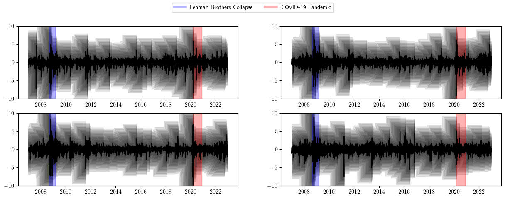
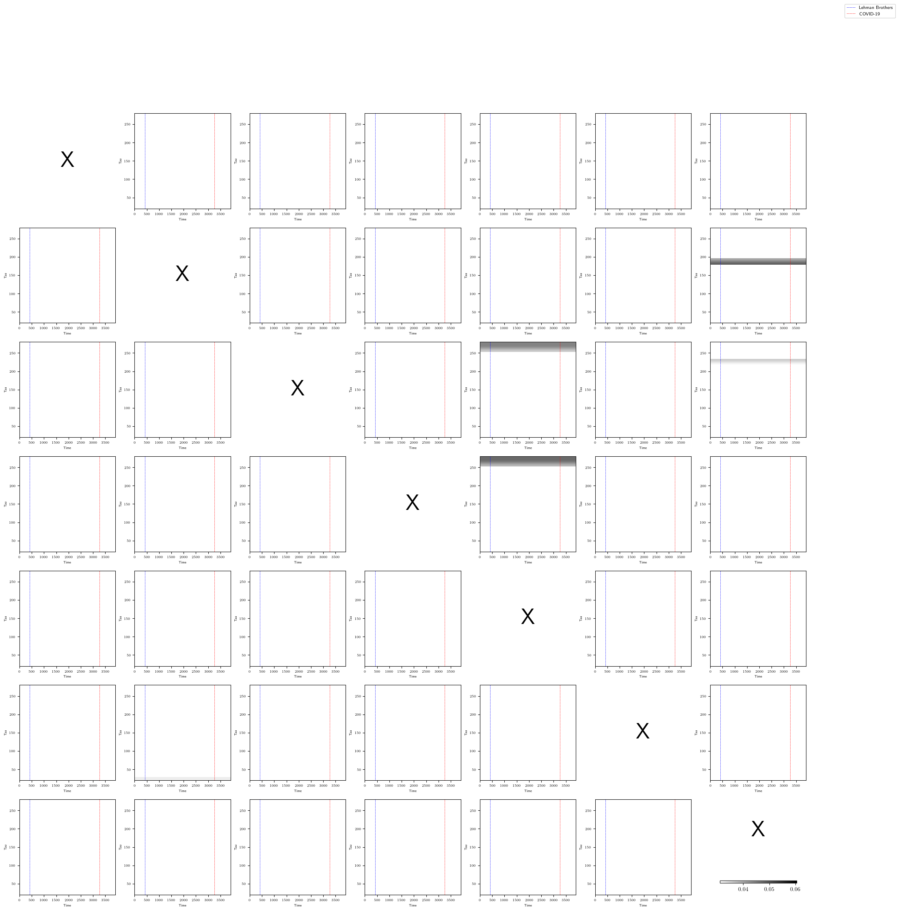

(연구&교수님) 다중척도논문 – TPT
# 두꺼운펜변환 함수 (사각펜)
def thick_pen_transform(X, taus, gamma=1):
n = len(X)
result = {}
for tau in taus:
U_tau = np.zeros(n)
L_tau = np.zeros(n)
for t in range(n - tau):
U_tau[t] = np.max(X[t:t+tau+1]) + gamma * (tau / 2)
L_tau[t] = np.min(X[t:t+tau+1]) - gamma * (tau / 2)
# 경계 케이스 처리
for t in range(n - tau, n):
U_tau[t] = np.max(X[t:n]) + gamma * (tau / 2)
L_tau[t] = np.min(X[t:n]) - gamma * (tau / 2)
result[tau] = (L_tau, U_tau)
return result
# 두꺼운펜 변환 상관계수 계산 함수
def rho_tau(X, Y, taus):
rho_values = {}
X_result = thick_pen_transform(X, taus)
Y_result = thick_pen_transform(Y, taus)
for tau in taus:
rho_tau_t = np.zeros(len(X))
L_tau_X, U_tau_X = X_result[tau]
L_tau_Y, U_tau_Y = Y_result[tau]
for t in range(len(X)):
min_U = min(U_tau_X[t], U_tau_Y[t])
max_L = max(L_tau_X[t], L_tau_Y[t])
max_U = max(U_tau_X[t], U_tau_Y[t])
min_L = min(L_tau_X[t], L_tau_Y[t])
rho_tau_t[t] = (min_U - max_L) / (max_U - min_L)
rho_values[tau] = rho_tau_t
return rho_values그냥 두꺼운펜
# 지수 데이터 수집
indices = {
'KOSDAQ': '^KQ11',
'NASDAQ': '^IXIC',
'S&P 500': '^GSPC',
'Nikkei 225': '^N225',
}
start_date = '2007-01-01' # 리만 브라더스 사태를 포함한 시작 날짜
end_date = '2023-01-01' # 종료 날짜
taus = list(range(25, 300, 25)) # 두께 매개변수
# 하이라이트 기간 정의
highlight_periods = [
('2008-09-01', '2009-03-01', 'Lehman Brothers Collapse', 'blue'),
('2020-03-01', '2020-12-01', 'COVID-19 Pandemic', 'red')
]
plt.rcParams['text.usetex'] = True
plt.rcParams['text.latex.preamble'] = r'\usepackage{amsmath}' # 필요한 패키지 설정
fig, axes = plt.subplots(nrows=2, ncols=2, figsize=(15, 5))
for i, (name, ticker) in enumerate(indices.items()):
row = i // 2
col = i % 2
# 데이터 다운로드
data = yf.download(ticker, start=start_date, end=end_date)
close_prices = data['Close'].values
dates = data.index
# 로그 변환
log_prices = np.log(close_prices)
# 차분
differenced_log_prices = np.diff(log_prices)
# 표준화
mean_diff = np.mean(differenced_log_prices)
std_diff = np.std(differenced_log_prices)
standardized_diff = (differenced_log_prices - mean_diff) / std_diff
# 두꺼운펜변환 적용
result = thick_pen_transform(standardized_diff, taus, gamma=0.03)
# 시각화
ax = axes[row, col]
for tau, (L_tau, U_tau) in result.items():
ax.fill_between(dates[1:], L_tau, U_tau, alpha=0.1, color='black')
ax.plot(dates[1:], standardized_diff, color='black')
for start, end, label, color in highlight_periods:
ax.axvspan(pd.to_datetime(start), pd.to_datetime(end), color=color, alpha=0.3)
ax.set_ylim([-10, 10])
# 각 플롯의 제목을 수동으로 설정
# titles = ['KOSDAQ (Thick-Pen Transform)', 'NASDAQ (Thick-Pen Transform)', 'S&P 500 (Thick-Pen Transform)', 'Nikkei 225 (Thick-Pen Transform)']
# axes[0,0].set_title(titles[0])
# axes[0,1].set_title(titles[1])
# axes[1,0].set_title(titles[2])
# axes[1,1].set_title(titles[3])
# 레전드 추가
handles = [plt.Line2D([0], [0], color='blue', alpha=0.3, lw=4),
plt.Line2D([0], [0], color='red', alpha=0.3, lw=4)]
labels = [label for _, _, label, _ in highlight_periods]
fig.legend(handles, labels, loc='upper center', ncol=2)
#plt.tight_layout(rect=[0, 0, 1, 0.95])
#plt.show()[*********************100%%**********************] 1 of 1 completed
[*********************100%%**********************] 1 of 1 completed
[*********************100%%**********************] 1 of 1 completed
[*********************100%%**********************] 1 of 1 completed
히트맵
# 지수 데이터 수집
indices = {
'KOSPI': '^KS11',
'KOSDAQ': '^KQ11',
'NASDAQ': '^IXIC',
'S&P 500': '^GSPC',
'FTSE 100': '^FTSE',
#'DAX': '^GDAXI',
'Nikkei 225': '^N225',
'Hang Seng': '^HSI'
}
start_date = '2007-01-01' # 리만 브라더스 사태를 포함한 시작 날짜
end_date = '2023-01-01' # 종료 날짜
taus = list(range(20, 80, 20)) # 두께 매개변수
# 데이터 다운로드 및 전처리
data_dict = {}
min_length = float('inf')
for name, ticker in indices.items():
data = yf.download(ticker, start=start_date, end=end_date)
close_prices = data['Close'].values
dates = data.index
# 로그 변환
log_prices = np.log(close_prices)
# 차분
differenced_log_prices = np.diff(log_prices)
# 표준화
mean_diff = np.mean(differenced_log_prices)
std_diff = np.std(differenced_log_prices)
standardized_diff = (differenced_log_prices - mean_diff) / std_diff
data_dict[name] = standardized_diff
if len(standardized_diff) < min_length:
min_length = len(standardized_diff)
# 데이터 길이를 최소 길이로 맞춤
for name in data_dict:
data_dict[name] = data_dict[name][:min_length]
all_rho_values = []
# 데이터 딕셔너리 -> 선택된 리스트
selected_indices = list(data_dict.keys())
for i, name1 in enumerate(selected_indices):
for j, name2 in enumerate(selected_indices):
if name1 != name2: # 자기 자신과의 상관계수는 계산하지 않음
rho_values = rho_tau(data_dict[name1], data_dict[name2], taus)
rho_matrix = np.zeros((len(taus), min_length))
for k, tau in enumerate(taus):
rho_matrix[k, :] = rho_values[tau]
all_rho_values.append(rho_matrix)
# 전체 데이터의 상위 x% 임계값 계산
all_rho_values = np.concatenate(all_rho_values)
global_threshold = np.percentile(all_rho_values, 50)
# 리먼 브라더스 사태와 코로나19 팬데믹 기간 정의
lehman_start = pd.Timestamp('2008-09-15')
lehman_end = pd.Timestamp('2009-03-31')
covid_start = pd.Timestamp('2020-03-11')
covid_end = pd.Timestamp('2021-12-31')
# 날짜 데이터 추출 (첫 번째 지수의 날짜를 사용)
dates = yf.download(indices[selected_indices[0]], start=start_date, end=end_date).index
# 이벤트 기간을 인덱스로 변환
lehman_start_idx = np.where(dates >= lehman_start)[0][0]
lehman_end_idx = np.where(dates <= lehman_end)[0][-1]
covid_start_idx = np.where(dates >= covid_start)[0][0]
covid_end_idx = np.where(dates <= covid_end)[0][-1]
n = len(selected_indices)
fig, axes = plt.subplots(nrows=n, ncols=n, figsize=(25, 25))
for i, name1 in enumerate(selected_indices):
for j, name2 in enumerate(selected_indices):
ax = axes[i, j]
if name1 == name2: # 자기 자신과의 상관계수 위치에 'X' 표시
ax.text(0.5, 0.5, 'X', fontsize=40, ha='center', va='center')
ax.axis('off')
else:
rho_values = rho_tau(data_dict[name1], data_dict[name2], taus)
rho_matrix = np.zeros((len(taus), min_length))
for k, tau in enumerate(taus):
rho_matrix[k, :] = rho_values[tau]
# 전역 임계값을 사용하여 마스크 생성
mask = rho_matrix < global_threshold
# 마스크를 적용한 데이터 생성
masked_data = np.ma.array(rho_matrix, mask=mask)
# 커스텀 그레이스케일 컬러맵 생성 (하얀색 배경에 회색)
colors = plt.cm.gray_r(np.linspace(0, 1, 256))
colors[0] = [1, 1, 1, 1] # 첫 번째 색상을 하얀색으로 설정
custom_cmap = plt.cm.colors.LinearSegmentedColormap.from_list("custom_gray", colors)
#im = ax.imshow(masked_data, aspect='auto', cmap=custom_cmap, extent=[0, min_length, min(taus), max(taus)], vmin=global_threshold, vmax=np.max(all_rho_values))
im = ax.imshow(masked_data, aspect='auto', cmap=custom_cmap, extent=[0, min_length, min(taus), max(taus)], vmin=0, vmax=1)
# 리먼 브라더스 사태 기간 표시
ax.axvline(x=lehman_start_idx, color='b', linestyle='--', linewidth=0.5)
#ax.axvline(x=lehman_end_idx, color='b', linestyle='--', linewidth=0.5)
# 코로나19 팬데믹 기간 표시
ax.axvline(x=covid_start_idx, color='r', linestyle='--', linewidth=0.5)
#ax.axvline(x=covid_end_idx, color='r', linestyle='--', linewidth=0.5)
#ax.set_title(f'{name1} vs {name2}', fontsize=8)
ax.set_xlabel('Time', fontsize=6)
ax.set_ylabel('Tau', fontsize=6)
ax.tick_params(axis='both', which='major', labelsize=6)
if i == 6 and j == 6: # 마지막 셀에만 컬러바 추가
plt.colorbar(im, ax=ax, orientation='horizontal', pad=0.2, aspect=30, shrink=0.8)
#plt.tight_layout()
#plt.show()
# 범례 추가
fig.legend(['Lehman Brothers', 'COVID-19'], loc='upper right', bbox_to_anchor=(0.99, 0.99), fontsize=8)
#plt.tight_layout()
#plt.show()[*********************100%%**********************] 1 of 1 completed
[*********************100%%**********************] 1 of 1 completed
[*********************100%%**********************] 1 of 1 completed
[*********************100%%**********************] 1 of 1 completed
[*********************100%%**********************] 1 of 1 completed
[*********************100%%**********************] 1 of 1 completed
[*********************100%%**********************] 1 of 1 completed
[*********************100%%**********************] 1 of 1 completed